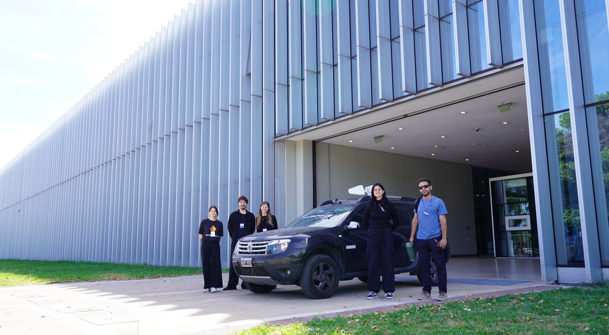

RF system design and characterization servicesServicios de diseño y caracterización de sistemas de radio
Optimization of communication chains and related services. We support projects from conceptual design to experimental validation and technical documentation, working with a local network of specialists and collaborators with international experience.
Optimización de cadenas de comunicación y servicios afines. Acompañamos proyectos desde el diseño conceptual hasta la validación experimental y la documentación técnica, trabajando con una red local de especialistas y colaboradores con trayectoria internacional.
- RF/IF design and receive/transmit architecture.
- Noise, linearity, dynamic range, interference, and end-to-end performance characterization.
- Laboratory tests, field tests, technical reports, and transfer support.
- Diseño RF/IF y arquitectura de recepción y transmisión.
- Caracterización de ruido, linealidad, dinámica, interferencias y desempeño de extremo a extremo.
- Ensayos de laboratorio, pruebas de campo, reportes técnicos y transferencia.